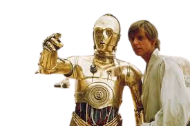
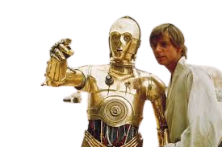

S t a r W a r s
IN A GALAXY FAR, FAR AWAY..

Best lightsabers
- Luke Slywalker ANH, ESB (lost in ESB) Bluit by Anakin
- Darth Vader ANH, ESB, ROJ (lost in ROJ)
- Obi-Wan Kenobi ANH (lost in ANH)
Personajes principales
- DARTH VADER
- LUKE SKYWALKER
- OBI-WAN KENOBI
- YODA
- HAN SOLO
Death star
Death Star is an Imperial space station within the fictional Star Wars universe. Throughout the saga, the Death Star and other similar stations have appeared five times. For the first time in A New Hope, where it is destroyed; the second in Return of the Jedi (a second version that is in a state of construction); the third in Attack of the Clones (as a shot Count Dooku has); the fourth in Revenge of the Sith (the one from episode IV under construction) and finally in Rogue One, where it appears in almost the entire film as a weapon capable of completely destroying planets and where the heroine Jyn Erso, along with a group of comrades, seek to get the Star plansso they can give them to the Rebel Alliance and find a way to end the most powerful weapon of the Galactic Empire..
Dark side
The Dark Side of the Force is associated with the cruelest and most evil aspects of it (from the perspective of sentient beings), such as death, suffering, corruption and domination, among others. It is also aligned with the pursuit of ultimate power: the primal desire of all living beings to increase their capabilities and their dominance over the environment -including other beings- to exercise their will without opposition.The Valley of the Dark Lords on Korriban became a nexus of dark side power as a result of the long-term presence of the Sith, as well as their lingering spirits. The tombs within the Valley were especially saturated with dark side energy, causing the relics within to have a permanent dark side aura. Within these tombs, as well as Freedon Nadd's on Dxun, the dark side was known to coagulate into visible pools of energy. These pools would tempt passersby to bathe in the dark energies, pulling them closer to the dark side.
Jedis
Within the fictional Star Wars galaxy, the Jedi are powerful guardians of order and justice who, through intuition, rigorous training, and intense self-discipline, are capable of wielding a supernatural power known as the Force, thus achieving , for example, the ability to move objects with the mind, perform incredible feats of strength, and connect with certain people's thoughts. 1. Yoda. The number one on the list of the most powerful Jedi does not surprise anyone. Yoda was the head of the Jedi Order in the prequels, the mystical recluse in the originals, and even made a token appearance in one of the sequels..
 
